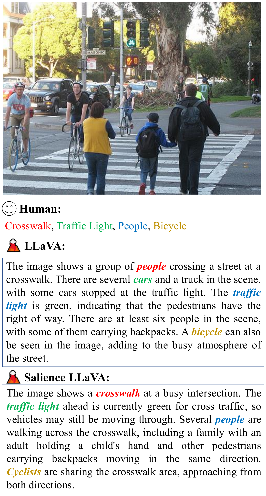
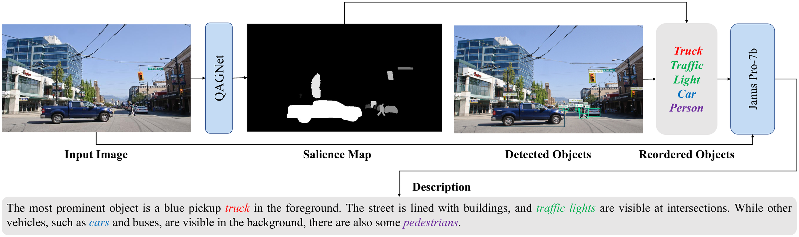
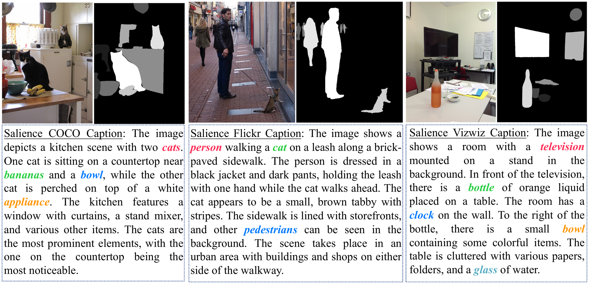
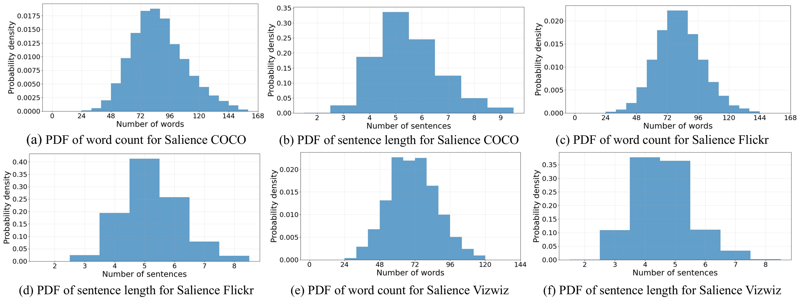
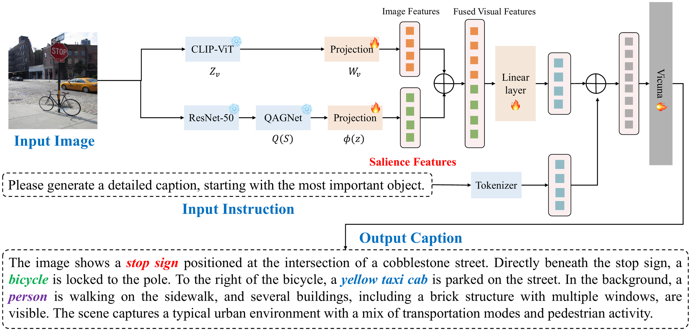
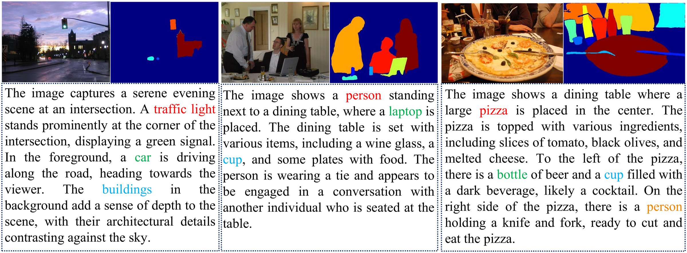
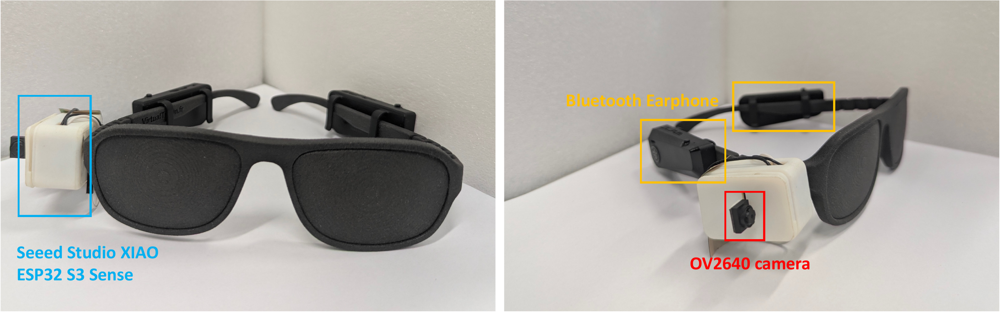
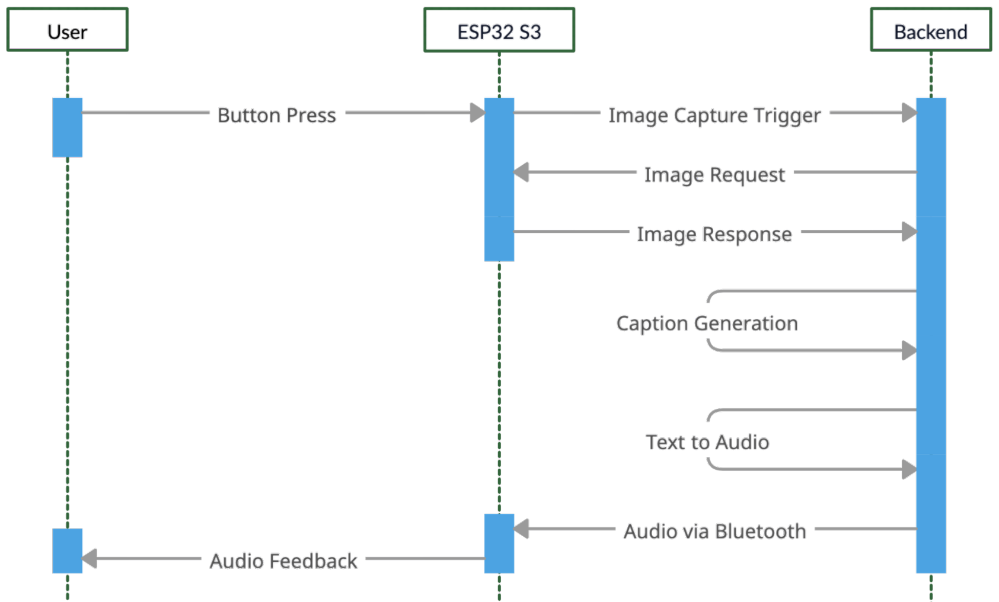

Vision-language models (VLMs) are rapidly progressing and offer promising capabilities for assistive technologies supporting persons with blindness or low vision. However, existing VLMs are primarily designed for general-purpose captioning and do not explicitly model human perceptual priorities, limiting their ability to emphasize the most relevant information in a scene. To address this gap, we propose a salience-driven captioning framework that prioritizes scene elements according to their importance for human-centered assistance. We curate three salience-aware datasets, namely Salience COCO, Salience Flickr, and Salience VizWiz, with object-level salience annotations designed to reflect the visual information most relevant to low vision users across different environments. Building on these datasets, we introduce Salience-LLaVA, a salience-aware vision-language model that incorporates salience cues to generate captions in which important elements are mentioned in order of importance. Our work makes four main contributions: we build salience-aware datasets verified by low vision participants, propose Salience-LLaVA to describe objects in order of importance, introduce SCMI to evaluate ordering accuracy, and deploy the system on assistive glasses to demonstrate real-world practicality.
Salience COCO, Salience Flickr & Salience VizWiz with object-level salience rankings, verified by low vision participants (Cohen's κ = 0.70).
A dual-branch VLM that fuses QAGNet saliency features with CLIP-ViT visual features so captions follow human importance ordering.
The Salience Coherent Match Index (plus a Wu-Palmer variant) measures whether captions mention key objects in the correct salience order.
Deployed on ESP32-S3 smart glasses that capture the scene and speak salience-ordered descriptions in near real time.
Existing captioning datasets do not convey the relative importance of visual elements, often lack real-world complexity, and are not designed around low vision user experiences. We therefore repurpose COCO, Flickr30K, and VizWiz into three salience-aware benchmarks. Each image is processed with QAGNet to produce a salience map; detected objects are ranked by salience score and passed with the image to Janus Pro-7B, which generates a ground-truth caption describing the objects exactly in order of importance.



| Salience COCO | Salience Flickr | Salience VizWiz | |
|---|---|---|---|
| #Images | 8,295 | 8,725 | 1,045 |
| #Total words | 728,043 | 712,516 | 73,689 |
| #Caption sentences | 46,012 | 46,190 | 4,815 |
| Avg. sentences | 5 | 5 | 4 |
| Vocabulary size | 6,657 | 6,882 | 2,854 |
| Avg. words per sentence | 16 | 15 | 15 |
Human verification. Four low vision participants (IRB-approved study) ranked the most salient objects on 120 sampled images. Agreement between participant rankings and our salience annotations reached Cohen's κ = 0.70, indicating good alignment with the perceptual priorities of low vision users.
⬇️ Download: all three datasets are available on Google Drive.
Salience-LLaVA is a dual-branch multimodal architecture built on LLaVA. A vision backbone branch (CLIP-ViT) extracts patch-level image features, while a multi-scale saliency branch (ResNet-50 + QAGNet) produces instance-level saliency features trained on genuine human fixation data. The projected saliency features are fused with the visual features, passed through a linear layer, concatenated with the tokenized instruction, and fed to Vicuna to generate a salience-ordered caption. Training uses LoRA plus the new projection layers, keeping the pretrained backbone frozen.


We evaluate on all three salience datasets with conventional captioning metrics (BLEU, CIDEr, METEOR, ROUGE) and our salience-specific metrics (SCMI and Wu-Palmer SCMI). Salience-LLaVA outperforms zero-shot and fine-tuned baselines — including recent salience-driven and assistive VLMs (SCOPE, WalkVLM) and two-shot-prompted state-of-the-art MLLMs — on nearly all metrics, with the largest gains on salience-ordering accuracy.
| Dataset | Model | B-1 | B-2 | B-3 | B-4 | CIDEr | METEOR | R-1 | R-2 | R-L | SCMI | WP-SCMI |
|---|---|---|---|---|---|---|---|---|---|---|---|---|
| Salience COCO | ||||||||||||
| DeCap | 0.35 | 0.18 | 0.06 | 0.03 | 0.07 | 0.26 | 0.38 | 0.09 | 0.23 | 0.35 | 0.44 | |
| GRIT | 0.27 | 0.13 | 0.05 | 0.03 | 0.03 | 0.19 | 0.35 | 0.09 | 0.23 | 0.28 | 0.32 | |
| Tag2Text | 0.27 | 0.14 | 0.06 | 0.02 | 0.05 | 0.21 | 0.36 | 0.10 | 0.24 | 0.33 | 0.38 | |
| LLaVA | 0.25 | 0.15 | 0.09 | 0.06 | 0.12 | 0.21 | 0.34 | 0.13 | 0.22 | 0.36 | 0.28 | |
| LLaVA-FT | 0.46 | 0.32 | 0.22 | 0.20 | 0.40 | 0.40 | 0.55 | 0.30 | 0.35 | 0.51 | 0.58 | |
| SCOPE | 0.44 | 0.27 | 0.17 | 0.10 | 0.17 | 0.33 | 0.48 | 0.19 | 0.30 | 0.53 | 0.60 | |
| WalkVLM | 0.45 | 0.31 | 0.21 | 0.15 | 0.29 | 0.38 | 0.53 | 0.25 | 0.34 | 0.53 | 0.60 | |
| Gemma4 (2-shot) | 0.24 | 0.15 | 0.09 | 0.06 | 0.13 | 0.19 | 0.31 | 0.12 | 0.20 | 0.25 | 0.31 | |
| Qwen3.6 (2-shot) | 0.39 | 0.25 | 0.15 | 0.10 | 0.12 | 0.39 | 0.50 | 0.19 | 0.30 | 0.50 | 0.55 | |
| Ours | 0.52 | 0.37 | 0.28 | 0.21 | 0.45 | 0.43 | 0.60 | 0.33 | 0.40 | 0.60 | 0.63 | |
| Salience Flickr | ||||||||||||
| DeCap | 0.35 | 0.20 | 0.16 | 0.06 | 0.06 | 0.26 | 0.37 | 0.08 | 0.21 | 0.42 | 0.51 | |
| GRIT | 0.28 | 0.14 | 0.06 | 0.03 | 0.03 | 0.19 | 0.35 | 0.09 | 0.23 | 0.27 | 0.29 | |
| Tag2Text | 0.28 | 0.13 | 0.05 | 0.03 | 0.05 | 0.21 | 0.37 | 0.10 | 0.23 | 0.40 | 0.43 | |
| LLaVA | 0.30 | 0.19 | 0.12 | 0.07 | 0.13 | 0.25 | 0.39 | 0.15 | 0.25 | 0.38 | 0.27 | |
| LLaVA-FT | 0.44 | 0.32 | 0.24 | 0.20 | 0.42 | 0.37 | 0.51 | 0.28 | 0.36 | 0.73 | 0.80 | |
| SCOPE | 0.41 | 0.25 | 0.15 | 0.10 | 0.14 | 0.33 | 0.46 | 0.16 | 0.29 | 0.53 | 0.59 | |
| WalkVLM | 0.24 | 0.14 | 0.10 | 0.05 | 0.10 | 0.34 | 0.34 | 0.13 | 0.21 | 0.68 | 0.76 | |
| Gemma4 (2-shot) | 0.28 | 0.17 | 0.11 | 0.07 | 0.17 | 0.23 | 0.34 | 0.13 | 0.23 | 0.35 | 0.45 | |
| Qwen3.6 (2-shot) | 0.39 | 0.25 | 0.16 | 0.10 | 0.14 | 0.39 | 0.50 | 0.19 | 0.30 | 0.58 | 0.65 | |
| Ours | 0.50 | 0.35 | 0.26 | 0.20 | 0.45 | 0.42 | 0.57 | 0.31 | 0.39 | 0.79 | 0.83 | |
| Salience VizWiz | ||||||||||||
| DeCap | 0.32 | 0.15 | 0.05 | 0.02 | 0.03 | 0.26 | 0.37 | 0.08 | 0.22 | 0.53 | 0.65 | |
| GRIT | 0.33 | 0.17 | 0.07 | 0.04 | 0.05 | 0.22 | 0.38 | 0.10 | 0.25 | 0.55 | 0.61 | |
| Tag2Text | 0.26 | 0.14 | 0.06 | 0.03 | 0.05 | 0.20 | 0.37 | 0.12 | 0.25 | 0.59 | 0.62 | |
| LLaVA | 0.11 | 0.07 | 0.05 | 0.03 | 0.05 | 0.13 | 0.24 | 0.10 | 0.20 | 0.40 | 0.43 | |
| LLaVA-FT | 0.35 | 0.25 | 0.18 | 0.13 | 0.31 | 0.29 | 0.43 | 0.22 | 0.30 | 0.60 | 0.49 | |
| SCOPE | 0.43 | 0.27 | 0.17 | 0.11 | 0.24 | 0.33 | 0.48 | 0.20 | 0.31 | 0.65 | 0.74 | |
| WalkVLM | 0.27 | 0.18 | 0.11 | 0.08 | 0.06 | 0.36 | 0.39 | 0.17 | 0.25 | 0.69 | 0.79 | |
| Gemma4 (2-shot) | 0.30 | 0.19 | 0.12 | 0.08 | 0.15 | 0.25 | 0.38 | 0.16 | 0.26 | 0.41 | 0.50 | |
| Qwen3.6 (2-shot) | 0.39 | 0.26 | 0.17 | 0.12 | 0.14 | 0.40 | 0.50 | 0.22 | 0.32 | 0.63 | 0.69 | |
| Ours | 0.47 | 0.32 | 0.23 | 0.17 | 0.36 | 0.38 | 0.54 | 0.27 | 0.35 | 0.71 | 0.79 | |
We integrate Salience-LLaVA into a wearable assistive device built around the Seeed Studio XIAO ESP32-S3 Sense, a thumb-sized board with an OV2640 camera, Wi-Fi, and Bluetooth. When the user presses the trigger button, the glasses capture an image and send it to a backend server for salience-aware caption generation; the caption is converted to speech and returned through the earphone, giving low vision users near real-time, importance-ordered auditory descriptions of their surroundings. In a pilot study on real-world indoor and street-crossing scenes, agreement between participant-selected important objects and the system's audio output reached Wu-Palmer SCMI 0.64 and Cohen's κ = 0.62.


@article{liang2026focus,
title = {Focus Where It Counts: A Salience-Driven Vision-Language Model for Low Vision Assistance},
author = {Liang, Jiazhao and Huang, Hao and Yuan, Shuaihang and Wen, Congcong and
Bethala, Geeta Chandra Raju and Hamilton-Fletcher, Giles and Hao, Yu and
Rizzo, John-Ross and Wang, Mengyu and Tzes, Anthony and Fang, Yi},
journal = {IEEE Transactions on Neural Networks and Learning Systems},
year = {2026}
}